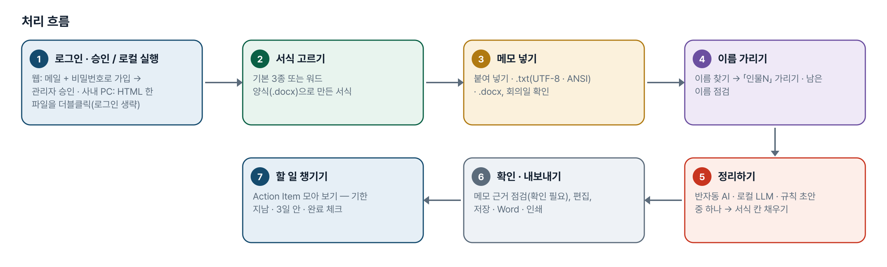
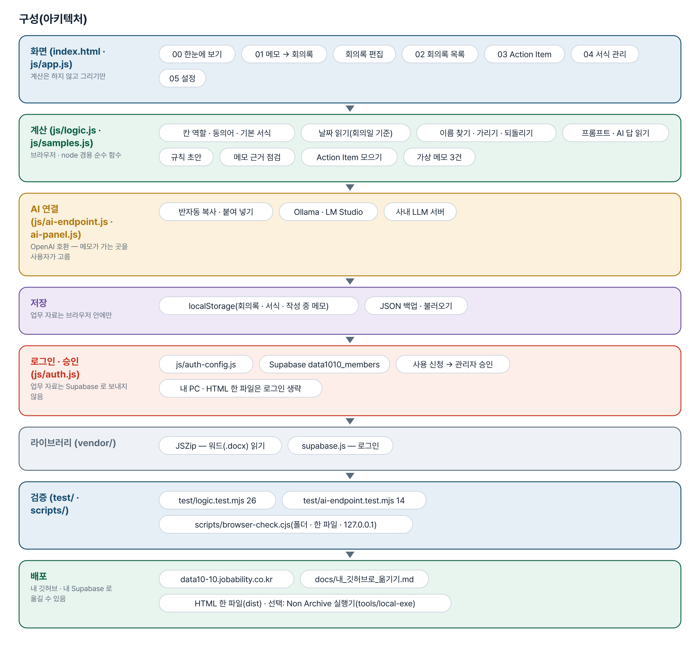
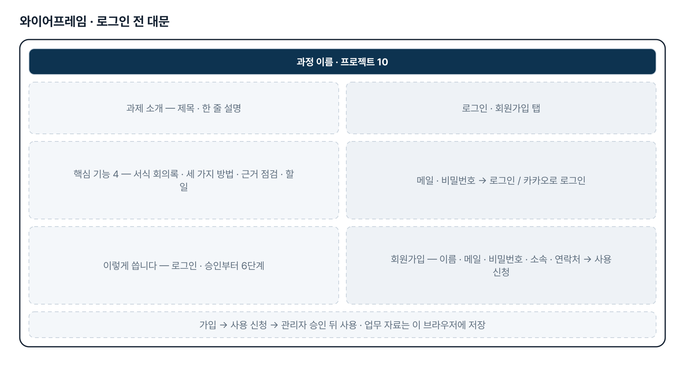
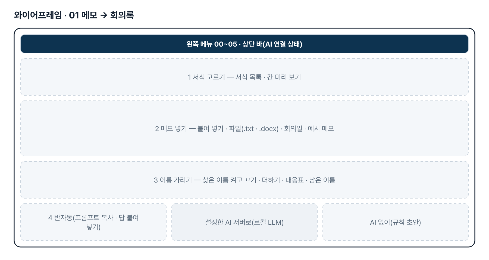
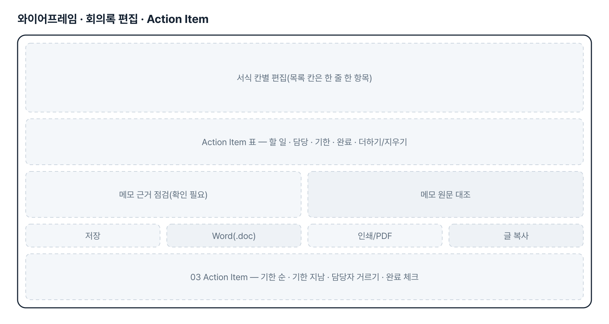
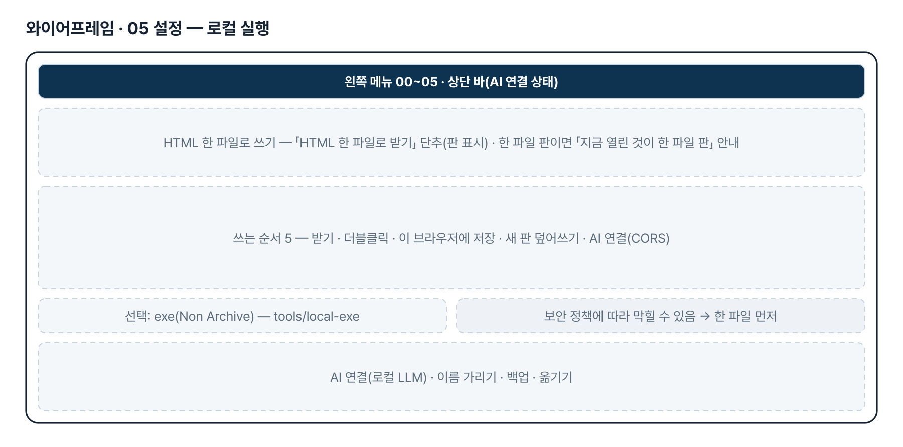
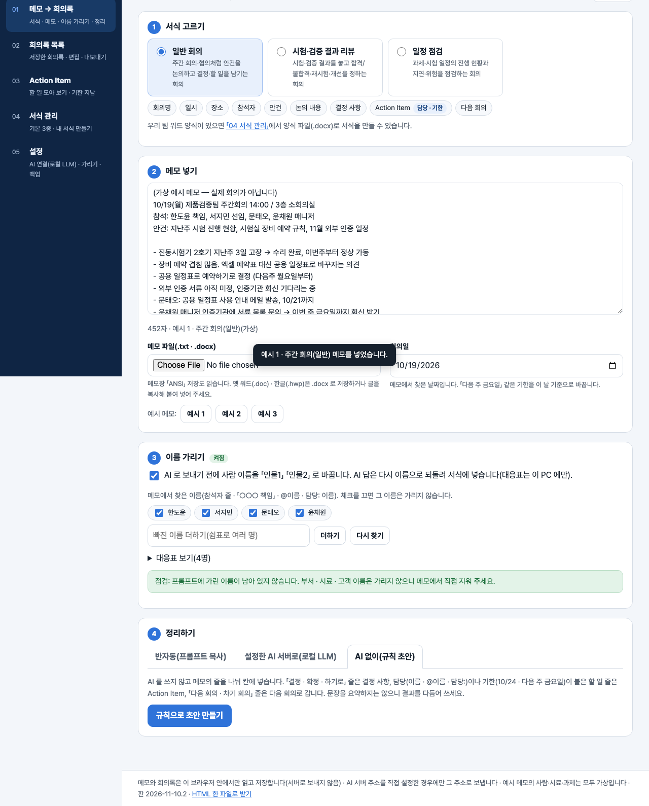

기획서 내려받기
파이프라인 · 아키텍처 · 와이어프레임 · 개발일지가 들어간 워드 문서입니다. 버전마다 따로 남깁니다.
| 버전 | 날짜 | 바뀐 점 | 파일 |
|---|---|---|---|
| v2.1 | 2026-11-10 | 로컬 실행 — HTML 한 파일(dist/data10-10_회의록요약도우미.html, 설치 · exe 없이 더블클릭) · 설정의 「HTML 한 파일로 받기」 / 선택: Non Archive 실행기(tools/local-exe — PyInstaller --onedir --noarchive, 내 PC 127.0.0.1 에서만 열림) / 파일로 열었을 때 사내 AI 서버 CORS(Origin: null) 안내 | 워드 내려받기 |
| v2.0 | 2026-11-10 | 최종 기획서 — 파이프라인 · 아키텍처 · 와이어프레임 정리 / 로그인 · 사용 신청 · 관리자 승인(요청자 Supabase 로 옮길 수 있게) / 로그인 전 대문 | 워드 내려받기 |
요구사항과 구현
| 기획서 요구 | 구현 |
|---|---|
| 메모장 · 워드로 작성된 회의 내용 넣기 | 붙여 넣기 · .txt(UTF-8 · 메모장 ANSI) · .docx(표는 한 행을 한 줄로). 옛 .doc · .hwp 는 2단계 |
| 회의록 서식을 같이 넣기 | 기본 서식 3종 + 워드 양식(.docx) · 양식 글에서 칸 뽑기, 칸마다 역할(결정 · Action Item · 다음 회의 …) |
| 서식에 맞춰 주요 내용 정리 | 반자동 프롬프트 · 답 읽기(JSON · 칸 이름 묶음 · 표) · 규칙 초안, 메모 근거 점검. 실제 정답 견본과 맞추기는 2단계 |
| 필요 시 로컬 LLM 활용 | OpenAI 호환 주소로 Ollama · LM Studio · 사내 LLM 서버, 모델 목록 불러오기, <think> 떼기 |
| 결정 · 담당 · 기한 챙기기 | Action Item 모아 보기 — 기한 지남 · 3일 안 · 담당자별, 완료 체크 |
| 회의 녹음 → 글 · 팀 공유 · 알림 | 3단계 — 범위 확정 후 |
| 사내 보안으로 웹 주소가 막힐 때 로컬 PC 에서 실행(exe · Non Archive) | HTML 한 파일(설치 · exe 없음, 더블클릭) 권장 · 선택으로 PyInstaller --onedir --noarchive 실행기 만드는 순서(tools/local-exe) |
그림으로 보기







개발일지
2026-11-10 · v2.1 로컬 실행
- 요청: 회사 보안으로 웹이 막힐 수 있어 로컬 PC 에서 exe(Non Archive)로 실행
- HTML 한 파일(dist) — index.html · css · js · vendor 를 한 파일로, 판을 올리면 함께 다시 만듦, file:// 에서는 로그인 · fresh-guard 생략
- 선택: tools/local-exe — run_local.py(표준 라이브러리, 127.0.0.1) · build_exe.bat(--onedir --noarchive) · README. Windows exe 는 Windows 에서 만들어야 함
- 로직 테스트 26개 · AI 연결 14개, 화면 점검 폴더 99 · 한 파일 105 · 127.0.0.1 99(1280 · 390 · 360px)
2026-11-10 · 최종 기획서 · 로그인
- 로그인 · 사용 신청 · 관리자 승인 적용, 로그인 전 대문
- 최종 기획서 v2.0(파이프라인 · 아키텍처 · 와이어프레임), README 정리
- 로직 테스트 25개 · AI 연결 테스트 13개 통과
2026-11-08 · 새 주소
- 옛 깃허브 Pages 주소에서 jobability.co.kr 새 주소로 옮김
2026-10-27 · 판 맞추기
- index.html 의 모든 js·css 에 ?v=판, fresh-guard, 판이 다르면 계산하지 않고 새로고침 안내
2026-10-26 · 비공개 전환
- 리포를 비공개로 바꾸고 README 의 Fork·ZIP 안내를 문의 안내로 교체
2026-10-20 · 기획서 v0.1 + 1단계
- 패들릿 제출 글을 기획서로 정리, 화면 6개 + 편집 화면 구현
- 세 가지 정리 방법을 나란히(반자동 · 로컬 LLM · 규칙 초안), 칸 역할, 너그러운 AI 답 읽기, 메모 근거 점검
- 로직 테스트 24개 · AI 연결 13개, 브라우저 점검 1280 · 390px 60개